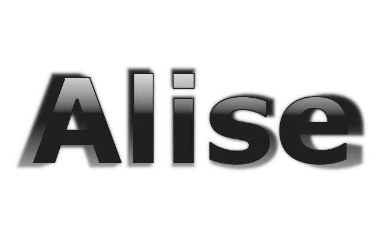

Gadu sākām ar GIMP programmas apgūšanu, rastrgrafikas lietotne. Veidojām animācijas par dažādām datorikas saistītām tēmām. Pati zīmēšana bija vienkārša, bet apguvu vairāk par .gif formātu
Septembra beigās sākām darboties ar inkscape. Bija jaiemācās kā strādāt ar vairākiem rīkiem un filtriem, lai iegūtu vēlamo vizuālo rezultātu. Bija piedāvāti daudzi ļoti kvalitatīvi video, lai palīdzētu mums izveidot vēlēto.


Lai uzmodelētu puzles gabaliņu ar lietotni Tinkercad. Strādājam grupās pa 4 un uz vienas no pusēm arī uzlikām mūsu uzņēmuma logo, vēlāk puzles gabaliņ tika izprintēti ar 3d printeri un ar nagu vīli vīlēti, lai tos varētu salikt kopā.
Mums bija jāatrāda savs 3d modelēšanas grupas darbs. Veiktā darba rādīšanai izmantojām video formātu. Mums bija jamontē video, jāizvēlas pareizi klipi, audio un jāizmanto arī subtitri. Daļa no video arī bija powerpoint izveidota reklāma par mūsu datorikas tēmām.
Attīstijām prasmes efektīvi izmantot izklājlapas. Mācījāmies gan formulas aprēķiniem, gan noformēšanas rīkas un sarežģītākas darbības, lai iegūtu vēlamo rezultātu.